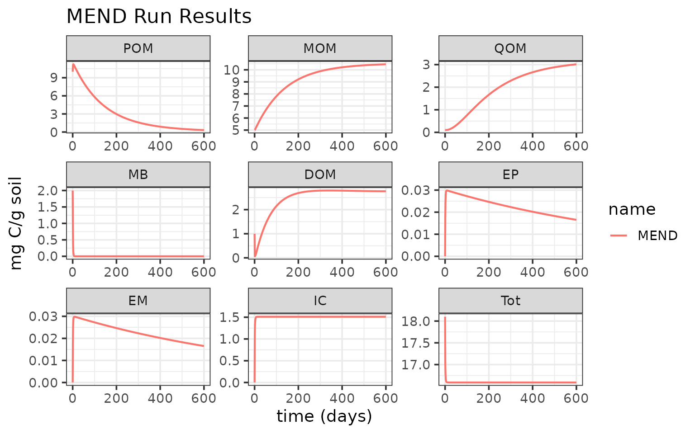
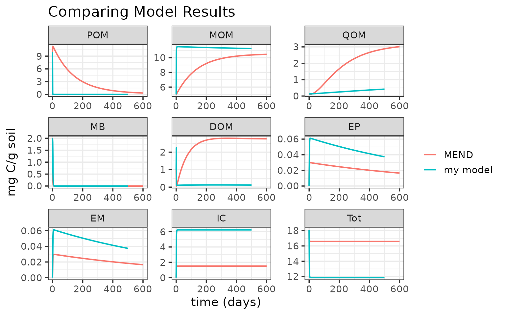

MEMC
MEMC.RmdMEMC is a R package that allows users to explore various
representation of soil organic matter (SOM) flux dynamics within a
consistent SOM pool model structure.
Example 1: Run MEMC MEND
The package ships with several already defined model configurations;
use help(configurations) to see a list. Currently there are
six configurations included as internal MEMC package data, with each
using different representations for DOM uptake, POM decomposition, and
MB decay.
All MEMC model configurations are listed in the
memc_all_configs and are listed in the summary table.
summary(memc_all_configs)| model | DOMuptake | POMdecomp | MBdecay |
|---|---|---|---|
| MEND | MM | MM | LM |
| COMISSION | MM | RMM | LM |
| CORPSE | RMM | LM | LM |
| MEMS | LM | LM | LM |
| BAMS | MM | MM | LM |
| MIMCS | MM | MM | DD |
Let’s try using MEND, the microbial enzyme-mediated decomposition model originally developed by Wang et al. 2014.
You can type help("MEND_config") for more details about
the pre-built configuration.
# Printing this MEMC model configuration will return a list giving the
# run name, a table of the flux dynamics, parameter values, and initial
# SOM pool sizes.
print(MEND_config)
#> $name
#> [1] "MEND"
#>
#> $table
#> model DOMuptake POMdecomp MBdecay
#> 1 MEND MM MM LM
#>
#> $params
#> parameter description
#> 1 V_p maximum specific decomposition rate for POM by EP
#> 2 K_p half-saturation constant for decomposition of POM
#> 3 V_m maximum specific decomposition rate for MOM by EM
#> 4 K_m half-saturation constant for decomposition of MOM
#> 5 V_d maximum specific uptake rate of D for growth of MB
#> 6 K_d half-saturation constant of uptake of D for growth of MB
#> 7 f_d fraction of decomposed P allocated to DOM
#> 8 g_d fraction of dead B allocated to DOM
#> 9 p_ep fraction of mR for production of EP
#> 10 p_em fraction of mR for production of EM
#> 11 r_ep turnover rate of EP
#> 12 r_em turnover rate of EM
#> 13 Q_max maximum DOC sorption capacity
#> 14 K_ads specific adsorption rate
#> 15 K_des desorption rate
#> 16 dd_beta strength of density dependent microbial decay
#> 17 Input_POM POM input
#> 18 Input_DOM DOM input
#> 19 CUE carbon use efficiency
#> units value
#> 1 mgC mgC^-1 d^-1 14.000
#> 2 mgC / g soil 50.000
#> 3 mgC mgC^-1 d^-1 0.250
#> 4 mg C/g soil 250.000
#> 5 mgC mgC^-1 d^-1 3.000
#> 6 mg C/g soil 0.250
#> 7 <NA> 0.500
#> 8 <NA> 0.500
#> 9 <NA> 0.010
#> 10 <NA> 0.010
#> 11 mgC mgC^-1 d^-1 0.001
#> 12 mgC mgC^-1 d^-1 0.001
#> 13 mgC / g soil 3.400
#> 14 mgC mgC^-1 d^-1 0.006
#> 15 mgC mgC^-1 d^-1 0.001
#> 16 <NA> 1.000
#> 17 mg C 0.000
#> 18 mg C 0.000
#> 19 0.400
#>
#> $state
#> POM MOM QOM MB DOM EP EM IC
#> 10.00000 5.00000 0.10000 2.00000 1.00000 0.00001 0.00001 0.00000
#> Tot
#> 18.10002Perform a model run using the memc_solve function, whose
inputs are:
-
mod. AMEMCmodel object, either one of the model configurations included with the package or created using thememc_configure(); and -
times. A numeric vector of the time sequence for which the model will be solved; the first value of times is the initial time.
mend_out <- memc_solve(mod = MEND_config, time = 0:600)The model run results are saved in the mend_out data
frame.
# Preview the run results
head(mend_out)
#> time variable value units name
#> <num> <fctr> <num> <char> <char>
#> 1: 0 POM 10.00000 mg C/g soil MEND
#> 2: 1 POM 10.85536 mg C/g soil MEND
#> 3: 2 POM 11.15375 mg C/g soil MEND
#> 4: 3 POM 11.22363 mg C/g soil MEND
#> 5: 4 POM 11.20608 mg C/g soil MEND
#> 6: 5 POM 11.15458 mg C/g soil MENDVisualize the run results:
library(ggplot2)
ggplot(data = mend_out) +
geom_line(aes(time, value, color = name), linewidth = 0.75) +
facet_wrap("variable", scales = "free") +
labs(y = "mg C/g soil",
x = "time (days)",
title = "MEND Run Results")
Example 2: Build your own model
With MEMC, users are able not only to easily run
simulations with the provided model configurations, but also build toy
model of their own design by selecting any combination of the supported
flux dynamics. See here for an example for how to use
memc_configure to build your own SOM model.
The MEMC package includes default parameter and initial
pool values that are included as package data that are based on Wang et
al. 20151. This example will use these values.
Before setting up the model configuration, take a look at these defaults:
print(memc_initial_state) # this is MEMC::memc_initial_state
#> POM MOM QOM MB DOM EP EM IC
#> 10.00000 5.00000 0.10000 2.00000 1.00000 0.00001 0.00001 0.00000
#> Tot
#> 18.10002
print(memc_params) # data(memc_params) or MEMC::memc_params
#> parameter description
#> 1 V_p maximum specific decomposition rate for POM by EP
#> 2 K_p half-saturation constant for decomposition of POM
#> 3 V_m maximum specific decomposition rate for MOM by EM
#> 4 K_m half-saturation constant for decomposition of MOM
#> 5 V_d maximum specific uptake rate of D for growth of MB
#> 6 K_d half-saturation constant of uptake of D for growth of MB
#> 7 f_d fraction of decomposed P allocated to DOM
#> 8 g_d fraction of dead B allocated to DOM
#> 9 p_ep fraction of mR for production of EP
#> 10 p_em fraction of mR for production of EM
#> 11 r_ep turnover rate of EP
#> 12 r_em turnover rate of EM
#> 13 Q_max maximum DOC sorption capacity
#> 14 K_ads specific adsorption rate
#> 15 K_des desorption rate
#> 16 dd_beta strength of density dependent microbial decay
#> 17 Input_POM POM input
#> 18 Input_DOM DOM input
#> 19 CUE carbon use efficiency
#> units value
#> 1 mgC mgC^-1 d^-1 14.000
#> 2 mgC / g soil 50.000
#> 3 mgC mgC^-1 d^-1 0.250
#> 4 mg C/g soil 250.000
#> 5 mgC mgC^-1 d^-1 3.000
#> 6 mg C/g soil 0.250
#> 7 <NA> 0.500
#> 8 <NA> 0.500
#> 9 <NA> 0.010
#> 10 <NA> 0.010
#> 11 mgC mgC^-1 d^-1 0.001
#> 12 mgC mgC^-1 d^-1 0.001
#> 13 mgC / g soil 3.400
#> 14 mgC mgC^-1 d^-1 0.006
#> 15 mgC mgC^-1 d^-1 0.001
#> 16 <NA> 1.000
#> 17 mg C 0.000
#> 18 mg C 0.000
#> 19 0.400Set up the model configuration:
# Running memc_configure will print a table describing the model configuration.
my_config <- memc_configure(params = memc_params,
state = memc_initial_state,
name = "my model",
DOMuptake = "MM",
POMdecomp = "LM",
MBdecay = "LM")Use memc_solve to run our model…
my_out <- memc_solve(mod = my_config, time = 0:500)
head(my_out)
#> time variable value units name
#> <num> <fctr> <num> <char> <char>
#> 1: 0 POM 10.000000000 mg C/g soil my model
#> 2: 1 POM 0.078133991 mg C/g soil my model
#> 3: 2 POM 0.057178745 mg C/g soil my model
#> 4: 3 POM 0.025336371 mg C/g soil my model
#> 5: 4 POM 0.010945045 mg C/g soil my model
#> 6: 5 POM 0.004727821 mg C/g soil my model…and compare our toy model results with the MEND results:

For more examples and tutorials please see our online documentation.